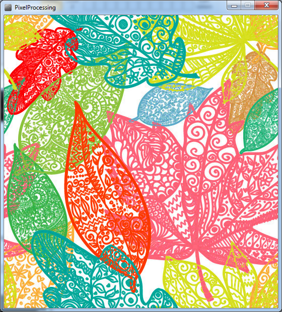

The Image Used in Following Examples
source: http://st.houzz.com/simgs/dad1a3fe036818b4_4-7442/tropical-wallpaper.jpg
Threshold
Convert to black and white pixels based on a level threshold.
Blur
Gaussian blur - image noise and detail reduction.
Gray
Convert to grayscale color equivalent.
Invert
Set pixels to their inverse.
Erode
Erode reduces light areas.

